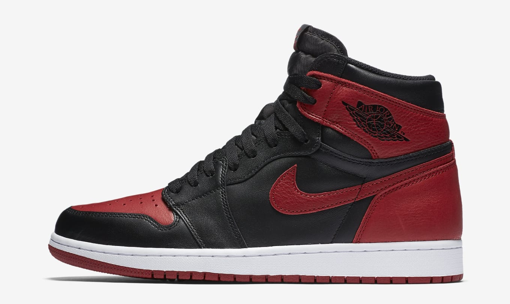

Case Study Between MobileNet And GoogleLens
Test Image - 1

Output on GoogleLens - Basketball
Output on MobileNet - Basketball
Result - both apps have identified the object correctly
Test Image - 2

Output on GoogleLens - Bottle
Output on MobileNet - Lighter
Result - The GoogleLens identified it correctly
Test Image - 3

Output on GoogleLens - Wine Glass
Output on MobileNet - Lamp Shade
Result - The GoogleLens identified it correctly
Test Image - 4

Output on GoogleLens - Rolex
Output on MobileNet - Analog Clock
Result - The MobileNet couldn't identify it correctly
Test Image - 5
Output on GoogleLens - Shoe
Output on MobileNet - Shoe
Result - Both have identified it correctly
Conclusion -
I tested both the application with 5 images which was Basketball,bottle, glass, rolex watch, shoe. And the app which identified most of the images correctly was GoogleLens!
I tested both the application with 5 images which was Basketball,bottle, glass, rolex watch, shoe. And the app which identified most of the images correctly was GoogleLens!